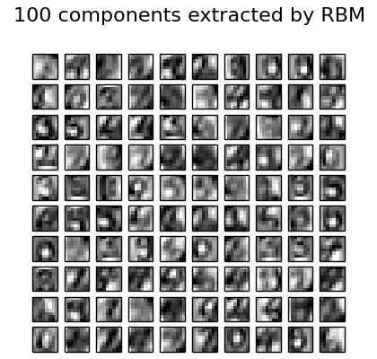

Restricted Boltzmann Machine features for digit classification¶
For greyscale image data where pixel values can be interpreted as degrees of blackness on a white background, like handwritten digit recognition, the Bernoulli Restricted Boltzmann machine model (BernoulliRBM) can perform effective non-linear feature extraction.
In order to learn good latent representations from a small dataset, we artificially generate more labeled data by perturbing the training data with linear shifts of 1 pixel in each direction.
This example shows how to build a classification pipeline with a BernoulliRBM feature extractor and a LogisticRegression classifier. The hyperparameters of the entire model (learning rate, hidden layer size, regularization) were optimized by grid search, but the search is not reproduced here because of runtime constraints.
Logistic regression on raw pixel values is presented for comparison. The example shows that the features extracted by the BernoulliRBM help improve the classification accuracy.
Script output:
Iteration 0, pseudo-likelihood = -28.84, time = 0.46s
Iteration 1, pseudo-likelihood = -25.92, time = 0.47s
Iteration 2, pseudo-likelihood = -24.82, time = 0.46s
Iteration 3, pseudo-likelihood = -23.71, time = 0.47s
Iteration 4, pseudo-likelihood = -23.03, time = 0.47s
Iteration 5, pseudo-likelihood = -22.44, time = 0.47s
Iteration 6, pseudo-likelihood = -21.91, time = 0.45s
Iteration 7, pseudo-likelihood = -21.66, time = 0.45s
Iteration 8, pseudo-likelihood = -21.39, time = 0.46s
Iteration 9, pseudo-likelihood = -21.07, time = 0.50s
Iteration 10, pseudo-likelihood = -20.85, time = 0.46s
Iteration 11, pseudo-likelihood = -20.74, time = 0.45s
Iteration 12, pseudo-likelihood = -20.57, time = 0.46s
Iteration 13, pseudo-likelihood = -20.44, time = 0.45s
Iteration 14, pseudo-likelihood = -20.29, time = 0.45s
Iteration 15, pseudo-likelihood = -20.20, time = 0.47s
Iteration 16, pseudo-likelihood = -19.98, time = 0.46s
Iteration 17, pseudo-likelihood = -19.75, time = 0.45s
Iteration 18, pseudo-likelihood = -19.78, time = 0.45s
Iteration 19, pseudo-likelihood = -19.67, time = 0.45s
Logistic regression using RBM features:
precision recall f1-score support
0 0.99 0.99 0.99 174
1 0.92 0.95 0.93 184
2 0.95 0.98 0.97 166
3 0.97 0.91 0.94 194
4 0.97 0.95 0.96 186
5 0.92 0.93 0.93 181
6 0.98 0.97 0.97 207
7 0.95 1.00 0.97 154
8 0.90 0.88 0.89 182
9 0.91 0.93 0.92 169
avg / total 0.95 0.95 0.95 1797
Logistic regression using raw pixel features:
precision recall f1-score support
0 0.85 0.94 0.89 174
1 0.57 0.55 0.56 184
2 0.72 0.85 0.78 166
3 0.76 0.74 0.75 194
4 0.85 0.82 0.84 186
5 0.74 0.75 0.75 181
6 0.93 0.88 0.91 207
7 0.86 0.90 0.88 154
8 0.68 0.55 0.61 182
9 0.71 0.74 0.72 169
avg / total 0.77 0.77 0.77 1797
Python source code: plot_rbm_logistic_classification.py
from __future__ import print_function
print(__doc__)
# Authors: Yann N. Dauphin, Vlad Niculae, Gabriel Synnaeve
# License: BSD
import numpy as np
import matplotlib.pyplot as plt
from scipy.ndimage import convolve
from sklearn import linear_model, datasets, metrics
from sklearn.cross_validation import train_test_split
from sklearn.neural_network import BernoulliRBM
from sklearn.pipeline import Pipeline
###############################################################################
# Setting up
def nudge_dataset(X, Y):
"""
This produces a dataset 5 times bigger than the original one,
by moving the 8x8 images in X around by 1px to left, right, down, up
"""
direction_vectors = [
[[0, 1, 0],
[0, 0, 0],
[0, 0, 0]],
[[0, 0, 0],
[1, 0, 0],
[0, 0, 0]],
[[0, 0, 0],
[0, 0, 1],
[0, 0, 0]],
[[0, 0, 0],
[0, 0, 0],
[0, 1, 0]]]
shift = lambda x, w: convolve(x.reshape((8, 8)), mode='constant',
weights=w).ravel()
X = np.concatenate([X] +
[np.apply_along_axis(shift, 1, X, vector)
for vector in direction_vectors])
Y = np.concatenate([Y for _ in range(5)], axis=0)
return X, Y
# Load Data
digits = datasets.load_digits()
X = np.asarray(digits.data, 'float32')
X, Y = nudge_dataset(X, digits.target)
X = (X - np.min(X, 0)) / (np.max(X, 0) + 0.0001) # 0-1 scaling
X_train, X_test, Y_train, Y_test = train_test_split(X, Y,
test_size=0.2,
random_state=0)
# Models we will use
logistic = linear_model.LogisticRegression()
rbm = BernoulliRBM(random_state=0, verbose=True)
classifier = Pipeline(steps=[('rbm', rbm), ('logistic', logistic)])
###############################################################################
# Training
# Hyper-parameters. These were set by cross-validation,
# using a GridSearchCV. Here we are not performing cross-validation to
# save time.
rbm.learning_rate = 0.06
rbm.n_iter = 20
# More components tend to give better prediction performance, but larger
# fitting time
rbm.n_components = 100
logistic.C = 6000.0
# Training RBM-Logistic Pipeline
classifier.fit(X_train, Y_train)
# Training Logistic regression
logistic_classifier = linear_model.LogisticRegression(C=100.0)
logistic_classifier.fit(X_train, Y_train)
###############################################################################
# Evaluation
print()
print("Logistic regression using RBM features:\n%s\n" % (
metrics.classification_report(
Y_test,
classifier.predict(X_test))))
print("Logistic regression using raw pixel features:\n%s\n" % (
metrics.classification_report(
Y_test,
logistic_classifier.predict(X_test))))
###############################################################################
# Plotting
plt.figure(figsize=(4.2, 4))
for i, comp in enumerate(rbm.components_):
plt.subplot(10, 10, i + 1)
plt.imshow(comp.reshape((8, 8)), cmap=plt.cm.gray_r,
interpolation='nearest')
plt.xticks(())
plt.yticks(())
plt.suptitle('100 components extracted by RBM', fontsize=16)
plt.subplots_adjust(0.08, 0.02, 0.92, 0.85, 0.08, 0.23)
plt.show()
Total running time of the example: 38.85 seconds ( 0 minutes 38.85 seconds)